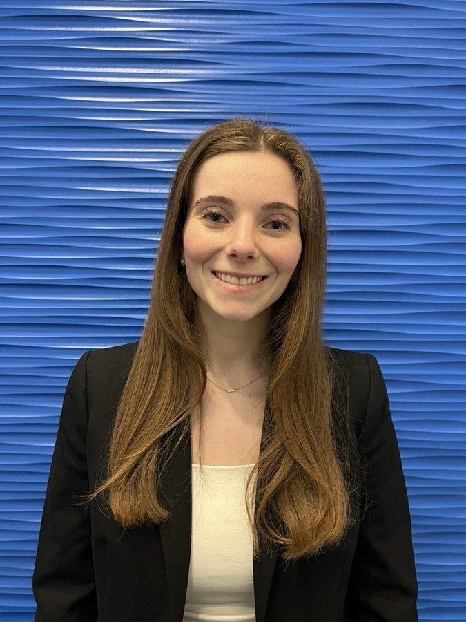
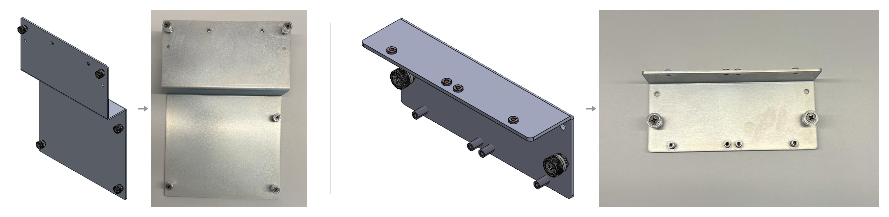
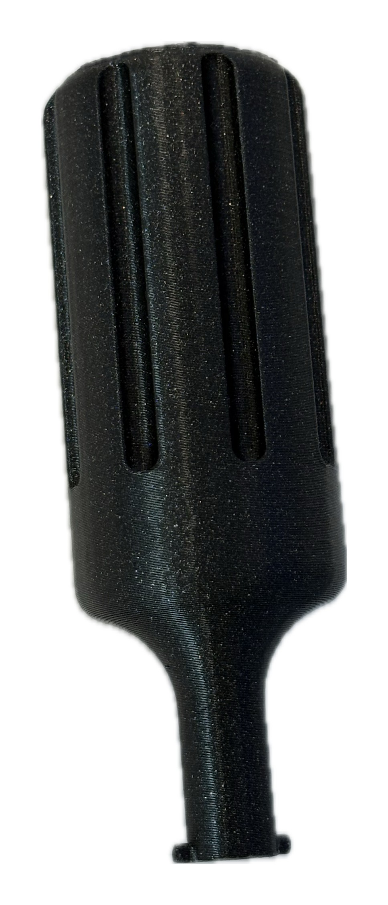
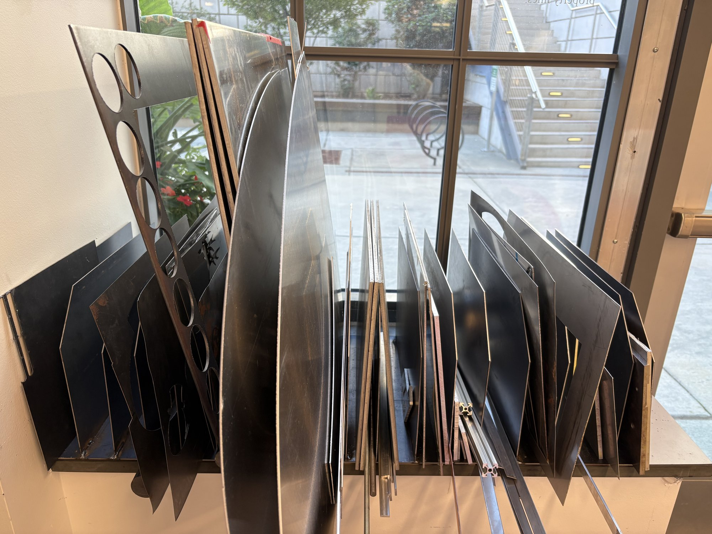

I design hardware and then build it.
I'm a mechanical engineer who takes parts from CAD to the shop floor: modeling in SOLIDWORKS, iterating with 3D-printed prototypes, and finishing on the CNC mill and welder. Most recently I led mechanical design on a wave-powered battery charger that averaged 0.8 W per simulated wave against a 0.3125 W target.

I'm working toward an M.S. in Mechanical Engineering at Boston University, after a B.S. in Engineering from Wake Forest University. I like the part of engineering where a model becomes something you can hold, and I'm happiest moving between CAD, the 3D printer and the mill until a part fits and works.
I've run regulated SLA, PolyJet and FDM builds of patient-specific medical devices at Ricoh 3D for Healthcare, designed sheet-metal plates and a service tool for dental lasers at Convergent Dental, built a copper sample mount for a research cryostat, and led mechanical design on a wave-energy converter. Across all of them I design for the person who has to make, assemble or repair the product.

Float Goat V2
A portable wave-energy converter that charges a battery from the rise and fall of a buoy. I led mechanical design.

Sheet Metal Mounting Plates
Sheet-metal plates that mount the air module and the galvos inside a new laser chassis, from sketch to prototype.

Cryogenic Sample Holder
A copper sample mount for a Montana Instruments cryostat that cut measurement noise by up to ~79%.

Mist Nozzle Removal Tool
A slide-twist-pull hand tool for swapping the mist nozzle on a dental laser handpiece without a service visit.

Welded Sheet Metal Organizer
A 36-inch steel rack with 19 welded dividers, drawn as a three-sheet drawing package and fabricated by hand.
CAD & Product Design Intern
CAD and photorealistic renderings of consumer accessories, designed for manufacturing.
Mechanical Engineering Intern
Designed sheet-metal mounting plates and a mist-nozzle service tool for dental lasers; organized 300+ parts into a multi-level BOM.
Additive Manufacturing Intern
Ran regulated SLA, PolyJet and FDM builds of FDA-cleared, patient-specific medical devices and inspected them by laser scanning.
Mechanical Design Lead
Float Goat V2 wave-energy converter: owned the drivetrain, designed and machined the custom parts.
Research Assistant
Copper cryogenic sample mount that cut measurement noise by ~79%.
Lab & Studio Student Manager
Trained every new student worker on every machine in the studio.
M.S., Mechanical Engineering
B.S., Engineering (Mechanical)
GPA 3.64, departmental 3.90